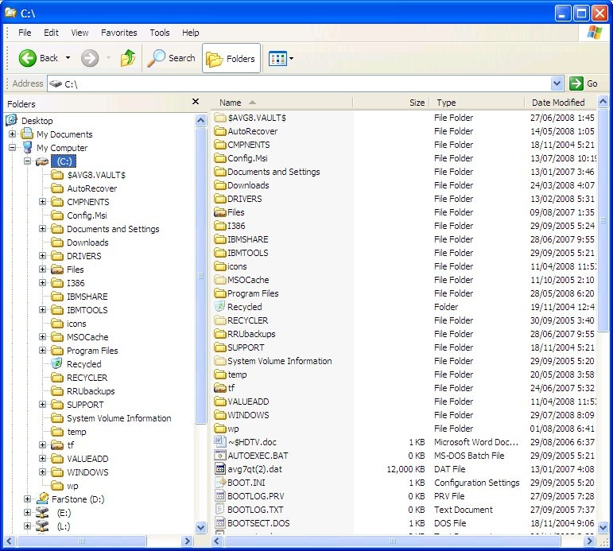
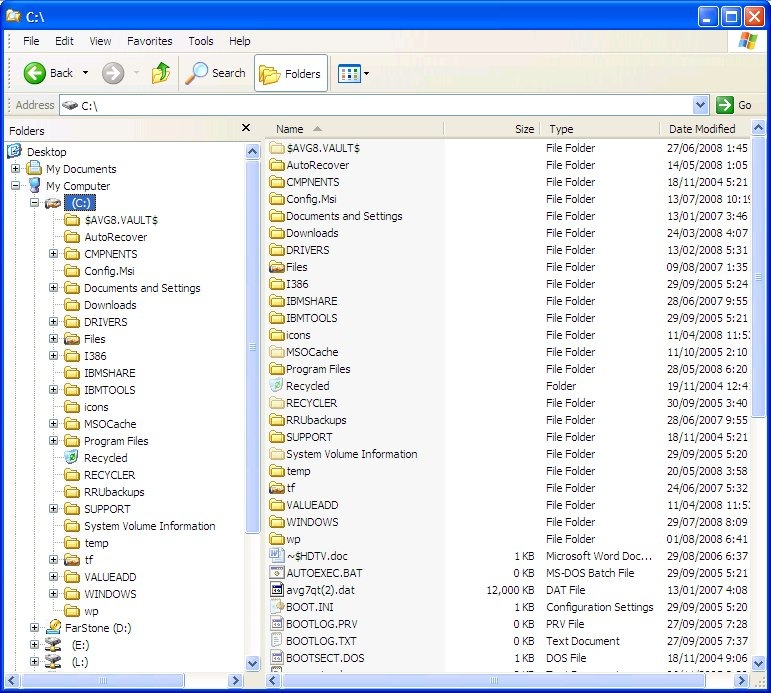

(Sorry for my english, I speak Spanish)
Hey, can they add a classic address bar?
As of that result, the address bar will show the "Address" title and unseparate 'em from the back and forward buttons.
Windows XP:

Windows 7:

| Classic Shell http://www.classicshell.net/forum/ |
|
| Classic address? http://www.classicshell.net/forum/viewtopic.php?f=13&t=7663 |
Page 1 of 1 |
| Author: | MarioMario456 [ Fri Jun 09, 2017 6:30 pm ] |
| Post subject: | Classic address? |
(Sorry for my english, I speak Spanish) Hey, can they add a classic address bar? As of that result, the address bar will show the "Address" title and unseparate 'em from the back and forward buttons. Windows XP:  Windows 7:
|
|
| Author: | Gaurav [ Fri Jun 09, 2017 9:30 pm ] |
| Post subject: | Re: Classic address? |
There is no way to separate the address bar from the navigation buttons. At best, you can use the "Disable breadcrumbs" option of Classic Explorer. |
|
| Author: | MarioMario456 [ Sat Jun 10, 2017 4:34 am ] |
| Post subject: | Re: Classic address? |
Gaurav wrote: There is no way to separate the address bar from the navigation buttons. At best, you can use the "Disable breadcrumbs" option of Classic Explorer. But add "Hide navigation bar and show classic address toolbar" to show the classic address bar. |
|
| Author: | Anixx [ Tue Jun 13, 2017 8:35 pm ] |
| Post subject: | Re: Classic address? |
Gaurav wrote: There is no way to separate the address bar from the navigation buttons. At best, you can use the "Disable breadcrumbs" option of Classic Explorer. The Win7-style navigation bar can be hidden altogether: http://winclassic.boards.net/thread/132 ... s-explorer (and as I remember we already discussed it here) viewtopic.php?f=10&t=3433 And the navigation buttons are there already in Classic Explorer bar. What's the problem? Simply add an option to hide the navbar (the same way as the link shows) and add an address bar field to the Classic Explorer. |
|
| Author: | Ivo [ Tue Jun 13, 2017 8:47 pm ] |
| Post subject: | Re: Classic address? |
There is nothing simple about adding an address bar field to the Classic Explorer. |
|
| Page 1 of 1 | All times are UTC - 8 hours [ DST ] |
| Powered by phpBB® Forum Software © phpBB Group https://www.phpbb.com/ |
|